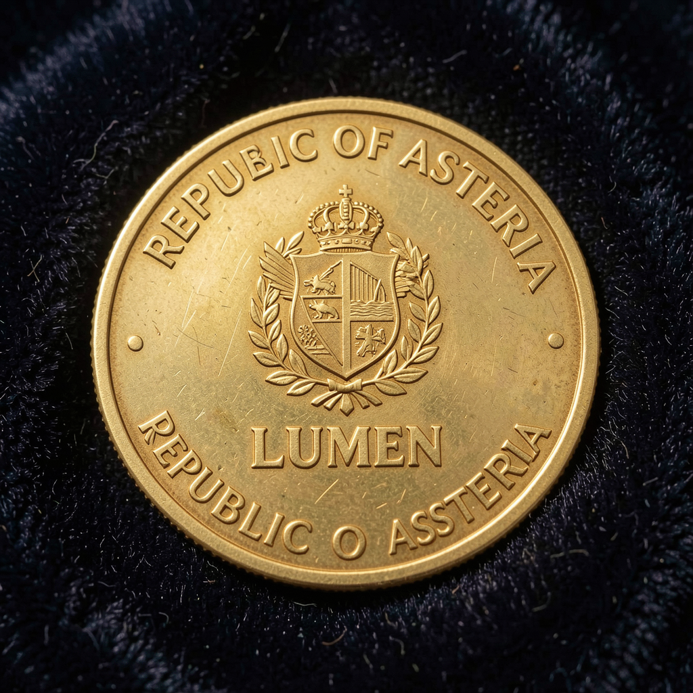

Economía
Moneda local — Lumen (◊)
Cambio aproximado: 1 Lumen ≈ 0,85 EUR. Billetes en circulación: 5, 10, 25, 50 y 100 Lúmenes. Monedas: 1, 2, 5, 10, 25 y 50 céntimos. Cada billete lleva impreso un paisaje diferente del país: la Sierra, el delta del Lumin, la Costa Dorada, la Laguna Celeste y el skyline de Valdoria.

Sustento económico
Asteria basa su economía en tres pilares complementarios que combinan tradición y futuro.
- Tecnología verde: desarrollo de paneles solares de perovskita y almacenamiento en baterías de flujo; exporta a más de 30 países en Europa y Asia.
- Agroalimentación sostenible: olivar ecológico, viñedos en altura y queso Astérico (DOP), reconocido en mercados internacionales.
- Turismo de naturaleza: parques nacionales, senderismo en la Sierra, termas en Laguna Celeste y rutas de observación de aves.
Nivel tecnológico
Asteria es una sociedad contemporánea avanzada (nivel OECD medio-alto). La inversión en I+D representa el 3,2% del PIB.
- 98% de hogares con fibra óptica.
- Tren de alta velocidad entre Valdoria, Puerto Estrella y Monteverde.
- 73% de la matriz eléctrica es renovable (eólica, solar, hidro).
- Proyecto Ciudad Cerebral: parque tecnológico en Valdoria que alberga el mayor centro de investigación en IA ética del hemisferio sur.